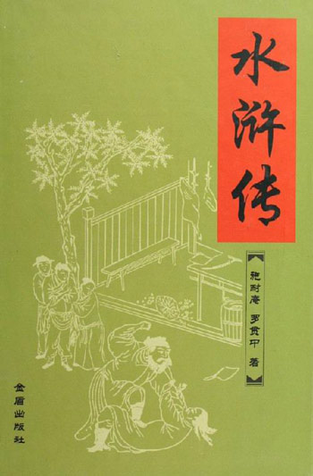
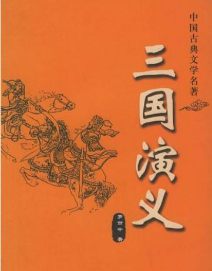

文章作者:半辈子 文章发表时间：2011-09-10 10:15:26 转载自：豆瓣网
宋江发配江州后，收服了不少人上梁山，但他本人却并不想落草，这其中有一个很现实的考量：宋江落草，是体制内混不下去了，无奈要从外面打回来，是不得已为之。晁盖等落草的起因是劫生辰纲，说穿了就是抢政府，这革命的出身很彻底，以他为首的梁山主流势力对回归体制这件事，主观上没有动力。晁盖系的主力以无产阶级为主，无产阶级的特点就是无产（废话），没什么可失去的，就只有想抢回来的。三阮说“这腔热血要卖与识货的！”无产者只有热血暴力，闹革命也无非就是无产想变有产。火并王伦后，晁盖在梁山并无太大的发展，这和他的队伍是“小富即安”的无产阶级有很大的关系。宋江在上梁山之前，就开始做回归体制的准备。第一件事，就是山上得有自己的人。宋在去江州的路上，收服了一堆人全部推上梁山，当时他未必就想落草，但这位“长成亦有权谋”的小吏要为自己铺一条后路，一条万不得已时才走的后路，那么培植宋系势力就是所有行动的大前提，没人办不了事。
宋江上梁山，要做的事就更多，培植势力仍是最主要的一方面。事实上，宋做的非常不错，收吕方郭盛，收燕顺王英等，收花荣秦明黄信等，收李立李俊等，收戴宗李逵张顺等，宋系人马在很短的时间就在梁山占据了上风。上山后，宋江仍能抓住核心问题，几番出征，都是为了抢功劳，抢人才。因为收了这许多人，宋江上山就有底气，跟晁盖说：“却也结识得许多好汉。”在梁山这样的土匪窝，道义只是幌子，实力才是王道。与培植势力相伴的，就是夺权。宋江做押司时曾为晁盖通风报信，那是小吏“黑白两道”通吃的智慧，上山后，形势变了，不得不下刀子：宋和晁在梁山出路上，理念不合。宋江上山后不久，被架空的晁盖就感到自己正在失去梁山，为了重振威信去打曾头市，问题就来了，小富即安的无产阶级队伍哪儿有什么战斗力啊。看看宋江打祝家庄带的是什么人，晁盖打曾头市带的又是什么人，两拨儿人马一比，就知道晁盖的失败了。
文章作者:梅花牛 文章发表时间：2008-07-14 22:50:09 转载自：豆瓣网
作为孔明，他一直比较喜欢故弄玄虚。所以我们可以知道这是一位信仰神秘主义的前辈。我从小就知道孔明，觉得他跟诸葛亮都是我国历史名人，上小学二年级的时候，我被同桌女生教训，她告诉我，孔明也姓诸，叫诸孔明，跟诸葛亮是亲戚。我很欣慰，这两个名人终于可以扯上关系了。可是仅过了一个多星期我就意外地知道真相了。丫骗了我。所以我一直喊她丫头片子。年幼的时候，我一直以为孔明是个老者。我觉得这可能与我当时看的一张画相有关。当年姥爷家墙上挂着一幅水墨画儿，画的是三顾茅庐，其中有一个长胡子的老头儿，戴着灰色方巾，穿着拖地长衫，那就是孔明。后来我又看到了很多孔明像，都是胡子很长，一副老朽模样。我就认为孔明就是个老头儿，他没有年轻的时候。以至于后来当我知道孔明享年只有五十四岁的时候，我都难以接受。他出山的时候只有二十六岁，假如把他放到八零后，那他应该生于1982年。这让我难以接受。我也是个男的，我也有胡子。据我的了解，二十六岁是不可能长出那么多的胡子的，何况那时候人们普遍发育很晚。我想，可能是因为中国人觉得嘴上无毛，办事不牢，而孔明年纪轻轻就办事很牢，与常理不符，所以被打扮成了一副大叔的模样，这就可以理解了。
文章作者:郝铮 文章发表时间：2016-03-21 10:15:26
妖怪实力排名：| 人物 | 武力值 | 备注 |
|---|---|---|
| 镇元子 | 106 | 图片 |
| 太上老君 | 105 | 图片 |
| 菩提 | 101 | 图片 |
| 如来 | 100 | 图片 |
| 总计 | 412 | |
{kind=link}
{kind=link}
{kind=link}
{kind=link}